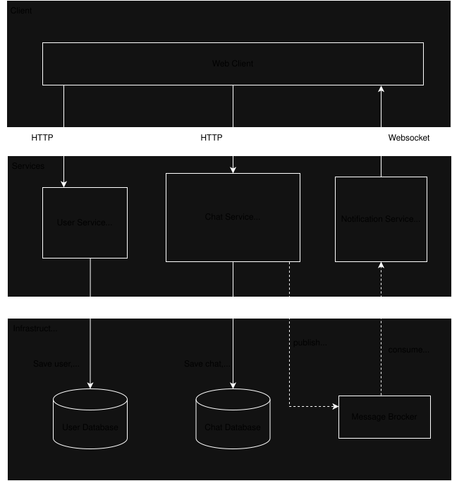

Система состоит из трёх независимых микросервисов на Golang:
• User Service — регистрация, авторизация через HTTP-only cookies + JWT, работа с профилями.
• Chat Service — создание чатов и сообщений, хранение истории в PostgreSQL, публикация событий в RabbitMQ.
• Notification Service — подписка на брокер и доставка сообщений по WebSocket клиентам.
Каждый микросервис самостоятельно валидирует access-токен из cookies.
Регистрация
Авторизация
Создание чата
Создание группового чата
Отправка сообщений в чате
Отправка сообщений в групповом чате